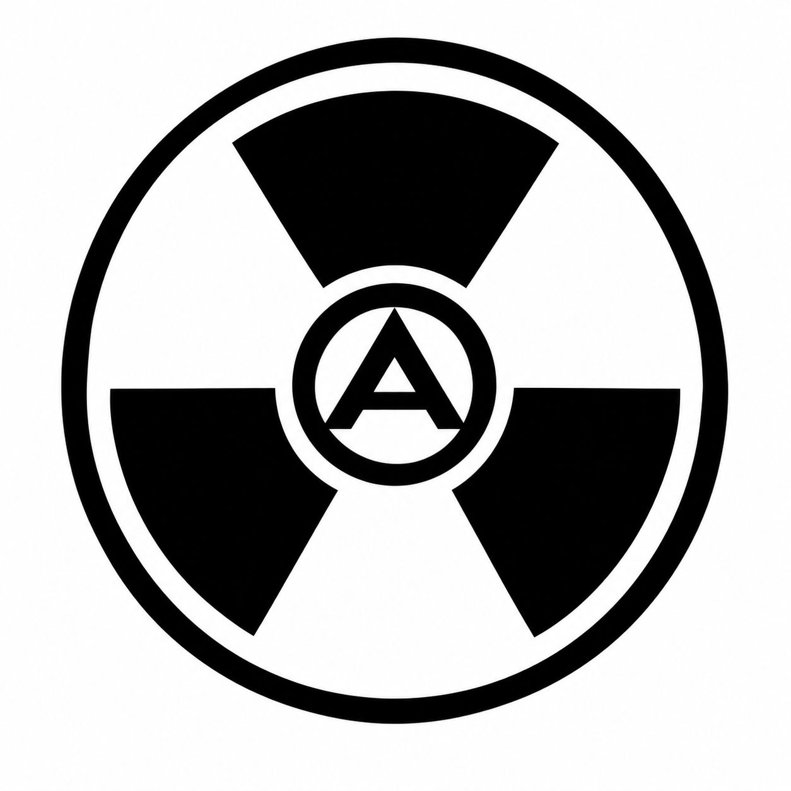

Offenes Web
Ziel ist eine breite Abdeckung öffentlich zugänglicher Seiten.

RADON SEARCHEin unabhängiges Suchprojekt mit dem Ziel, öffentlich erreichbare Websites auffindbar zu machen – nicht nur eine festgelegte Auswahl.
Der eigene Webindex befindet sich im Aufbau. Suchverlauf ist standardmäßig ausgeschaltet.
Ziel ist eine breite Abdeckung öffentlich zugänglicher Seiten.
Die Suchinfrastruktur soll schrittweise unabhängig aufgebaut werden.
Keine Werbe-Tracker eingebaut. Suchverlauf lässt sich freiwillig aktivieren.